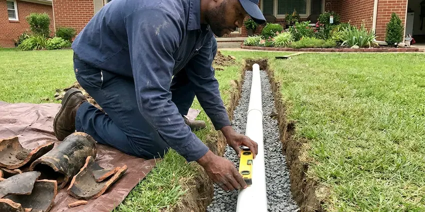

Gas Leak Repair in Tiverton, RI
Smell gas in your Tiverton, RI home? Get outside, call the utility, then call JPN Plumbing. We locate the leak with a gauge and a sniffer and repair it the same day in most cases.
- CSST Bonding
- Gauge Tested Repairs
- Permits Pulled for You
- Licensed Gas Plumbers

Get Your Gas Back On in Tiverton, RI.
Red tag on the meter? We repair it and handle the paperwork to the utility.
Licensed Gas Leak Repair for Tiverton, RI Homes
JPN Plumbing repairs natural gas and propane leaks in Tiverton, RI homes and small businesses, from a weeping flare nut behind the range to a rusted yard line feeding a detached garage. A gauge and a detector come out before any wrench does. Repairs are made with approved pipe and fittings and tested before the gas goes back on. Most jobs take a few hours.
Some of what we do:
- Polyethylene yard line installation with tracer wire
- Red tag repairs and utility relight scheduling
- Sediment trap and drip leg installation where code requires

Additional Plumbing Repair Services in Tiverton, RI
We offer expert plumbing repair services across Tiverton, RI to stop leaks, clear blockages, and keep every fixture working the way it should.


Customers
Why Choose JPN Plumbing for Gas Leak Repair in Tiverton, RI?
Gas does not give second chances. One spark from a pilot or an igniter is enough to set it off. We test the whole system, write down the readings and leave no fitting capped loosely when we pack up for the day.
- Safe Work Area, We shut the gas, ventilate and clear ignition sources before any repair starts.
- Fast Response, We head out as soon as the utility clears the scene.
- Local Techs, Our plumbers work Tiverton every day and know the older yard lines, so the search goes faster.
Citywide Coverage
Propane homes past the Tiverton limits get the same response as houses on the utility main. We test from the second-stage regulator to the last appliance. Long driveways are no problem. Tank-side leaks go to your propane supplier, and we stay with the system until it is safe.
Experienced Team
The tech who shows up at your door is the one who finds the leak and fixes it, not a salesperson followed by a crew a week later. That keeps the story straight from test to repair. They will show you the gauge reading and the bubbling joint before asking for your go-ahead.
Safety-First Approach
Carbon monoxide gets checked on the way out, since a leak repair is a good time to look at how the appliances are burning. Our combustion analyzer reads CO at the flue of each appliance. High readings get flagged. Any CO alarm in the house gets a test and a look at where it is mounted.
Trusted Certified Tiverton Plumbing Services Professionals
At JPN Plumbing, we take pride in licensed, certified plumbing services throughout Tiverton, RI. Those papers on the wall mean something. Every repair, install and maintenance visit follows strict safety and quality rules, and the plumbers doing the work carry recognized industry credentials.
Call Us Now PHCC Plumbing Contractor Recognition
PHCC Plumbing Contractor Recognition Better Business Bureau (BBB) Accreditation
Better Business Bureau (BBB) Accreditation Angi Certified Pro
Angi Certified Pro ISO 9001 Quality Management Certification
ISO 9001 Quality Management CertificationWhat Our Gas Leak Repair Visits Cover in Tiverton, RI
Red Tag Gas Repairs in Tiverton
A red tag on your meter or appliance means the utility found a leak or unsafe condition and will not restore gas until a licensed contractor fixes it. The tag usually says what they found, so we start there. Then we test everything. After the repair, we run the pressure test the utility or inspector requires and send them the paperwork. Relights are scheduled with the utility, usually within a day.

Gas Leak Detection in Tiverton
Some leaks announce themselves with a hiss you can hear across the room, and others lose a few cubic feet a day and only show up on the bill. Slow leaks are what the test gauge is for. We isolate, then sniff. We run the test twice, with appliance valves closed and then open, because some leaks only show downstream of a valve. Finding the exact joint keeps the job small.
Gas Leak Repair Cost Comparison in Tiverton, RI
Price follows access. A connector or fitting repair at an exposed appliance usually runs $150 to $450, testing included. Interior pipe inside finished walls or attics often lands between $300 and $1,000, and a buried yard line can run $1,000 to $4,000 depending on length, depth and whether we can bore instead of trench. You get a written price after we find the leak and before we start the repair. Permit fees are listed separately.
Interior Gas Pipe Repair in Tiverton, RI
Inside the house, gas leaks hide at unions in the basement and at the threaded nipple behind the furnace, places nobody looks. We work from the meter inward, testing each section as we go. Drywall stays intact when possible. Rerouting with CSST past a leak in a finished wall is often cheaper than cutting and patching drywall. Nothing is turned back on until the gauge holds steady.
Gas Line Replacement and Upgrades in Tiverton, RI
Adding a gas range or a tankless heater can overload pipe that was sized years ago for just a furnace and a water heater. We add up the BTU load and measure the run length before choosing a pipe size. Undersized pipe starves burners. Old pipe with heavy rust or bad threads gets replaced instead of patched, usually with black iron or CSST depending on access. A big tankless unit may also need a larger meter from the utility.
Propane Gas Leak Repair in Tiverton, RI
Propane behaves differently from natural gas because it is heavier than air, so a leak settles into basements and crawlspaces instead of rising. We check both regulators, the one at the tank and the one at the house. Low spots get sniffed first. If the supplier owns the tank, they handle the tank side and we handle the piping from there to the appliances. Rural properties with buried tanks get a line test too.
Gas Line Repair and Replacement in Tiverton, RI
Black iron pipe with threaded fittings is still the most common interior gas pipe, and the leak is nearly always at a thread, not in the middle of a length. We take the joint apart, clean the threads and remake it with fresh gas-rated sealant. Cracked fittings get replaced. Badly rusted sections, often near a crawlspace vent, are cut back to clean pipe and replaced. Every remade joint gets a detector check and a gauge test.

Commercial Gas Leak Repair in Tiverton
Commercial gas piping often runs at 2 psi or higher with regulators at each appliance bank, so a leak test there is not the same as a house test. We check regulator lockup and vent lines along with the joints. Rooftop units leak too. If a shutdown would cost you a dinner rush, we valve off just the bad branch and leave the rest live. Staff get a short briefing on the shutoff locations.
Local Gas Leak Repair in Tiverton, RI
Local matters with gas, because meter setups and inspection habits vary from one town to the next, even inside one county. JPN Plumbing works Tiverton and the towns around it every day. Our techs know which neighborhoods still have old steel yard lines. It means fewer test holes in your lawn.
Outdoor gas lines produce a surprising share of our calls, because pool heaters and fire pits sit at the end of long buried runs. Fence augers and sprinkler trenching cut more of these lines than rust does. Look for dead grass. We isolate that branch and test it separately from the house.
JPN Plumbing at a Glance
- Licensed and insured plumbers serving Tiverton, RI
- Same-day appointments and 24/7 emergency response
- Clear written estimates, no hidden fees
- 4.8-star rated by 684+ Rhode Island customers
Tiverton Map
Tiverton Information
- Population
- 7,809
- Area codes
- Local
- Service area
- Tiverton and communities within 40 miles
- Nearby
- Newport East, Warwick, East Providence, Newport
Pool heaters, fire pits and outdoor kitchens often sit at the end of long buried gas runs that nobody has checked since they went in, which makes them a common leak point in Tiverton, RI.
Expert Services
Call JPN Plumbing for reliable plumbing work done by licensed pros in Tiverton, RI.
Our Specialized Plumbing Services in Tiverton, RI
At JPN Plumbing, you get every kind of plumbing service from one company across Tiverton, RI. From leak detection to full system installs, our team works fast and charges fair prices on homes and commercial properties alike. Here are the core services we offer:


What Happens on a Gas Leak Call in Tiverton, RI
From your call to the final gauge reading, this is what to expect.
Call Us
Smell gas? Leave, call the utility, then call (401) 364-2507 for the repair. We give you an arrival window.
Find the Leak
We gauge test the system and check each fitting with a detector. You get a firm price before work begins.
Fix and Restore
The leak is repaired, the system passes a pressure test, and we light the appliances back up or set it up with the utility.
Frequently Asked Questions About Gas Leak Repair in Tiverton
Expect $150 to $400 for a minor fix like remaking a connection, and $500 to $2,500 or more when sections of pipe need replacing. The final price depends on pipe material and access. Testing comes first. We test, locate the leak and price the repair before any work starts, so the number does not move once we begin.
Leave, then call the utility or 911 from outside. Once they make it safe, we come out for the repair.
Black iron, galvanized steel in older homes, copper where local code allowed it, CSST and polyethylene for buried runs. Appliance connectors are part of the work too.
No. Gas joints need the right sealant and a pressure test afterward, and most jurisdictions require a licensed plumber or gas fitter to do the work. Undersealed joints often start leaking months later. An unlicensed repair can also give your insurer a reason to deny a claim after a gas fire.
Yes, we repair propane piping and appliance hookups on the house side of the regulator. Tank and first-stage regulator issues usually go through your propane supplier.
Rotten eggs is the classic one, because suppliers add mercaptan so you can smell what would otherwise be nearly odorless natural gas. You might also hear a hiss near the meter or an appliance. Dead grass over a buried line counts too. Feeling dizzy indoors and better outside is a warning as well.
Dispatch sends the closest gas-qualified tech as soon as the utility confirms the area is safe, and in most of Tiverton that means a few hours or less. Exact arrival depends on traffic and how busy the day is. You get a window when you call and a heads-up when the truck is close.
Get everyone outside into fresh air and call 911. Carbon monoxide has no smell, so the alarm is the only warning you get. Once the house is cleared, we check each appliance and its vent for the source.
What Our Customers Say About Our Plumbing Experts

Nathan E.
Our tankless heater kept throwing an error code and shutting off mid shower. The tech flushed the heat exchanger, which was full of scale, and replaced a bad flow sensor. Hot water has been steady for half a year now.
Water Heater Repair · Tiverton, RI
Monica A.
Our water bill nearly doubled in one month with no change in how we used water. The tech checked the meter, heard the leak under the hallway with his equipment, and opened a hole about a foot square. Fixed the same day.
Slab Leak Repair · East Providence, RI
Robert G.
The camera showed a full break in our clay sewer line near the street. JPN Plumbing replaced it with a trenchless pipe burst, so the only digging was two small pits in the yard. They let us watch the footage before and after.
Sewer Line Replacement · East Providence, RI
Karen W.
After our third pinhole leak in copper, we stopped patching. JPN Plumbing gave us a written plan room by room and repiped the house in PEX while we stayed in it. The crew covered our floors every morning and cleaned up every night.
Repiping · Newport East, RILaura S.
Our 40 gallon tank started leaking from the bottom after thirteen years. The tech hauled the old one out, set a new unit with a fresh expansion tank, and had hot water running in about four hours. He took the old tank with him too.
Water Heater Replacement · Tiverton, RIJames P.
Our restaurant had a slow leak at the hand sink that was rotting the cabinet base. JPN Plumbing came in at six in the morning before prep, replaced the trap and both supply lines, and was packed up before my first cook clocked in.
Commercial Plumbing · East Providence, RI